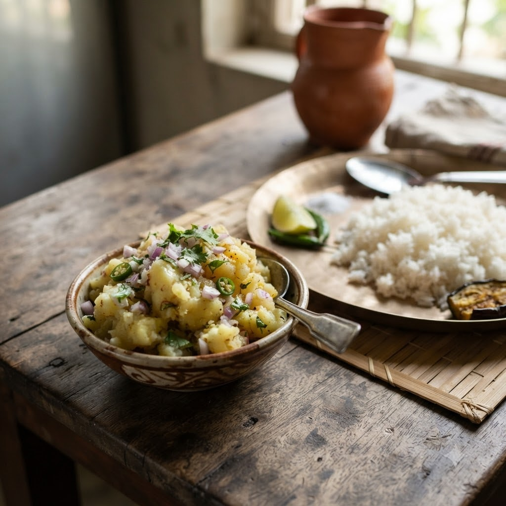

Aloo Bhate (Bengali-Style Mashed Potato)

Aloo Bhate (Bengali-Style Mashed Potato)
Chef Magic – Boil then Mix Auto 15 min — Serves 2
Gluten-Free • Vegan • Bengali • No-Cook Finish • Everyday
Ingredients
- 3 medium potatoes
- 1 tbsp mustard oil (sarson ka tel)
- 1 small onion, finely chopped
- 1 green chilli (hari mirch), finely chopped
- Salt to taste
- Chopped coriander (dhania)
Method
1Add whole potatoes with enough water to cover them to the jar; select Boil (Speed 1–2, 100°C) and cook until fork-tender.
2Peel and roughly mash the potatoes by hand in a bowl.
3Mix in mustard oil, onion, green chilli, salt and coriander while still warm.